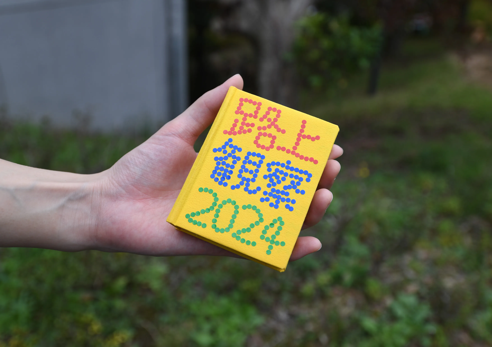
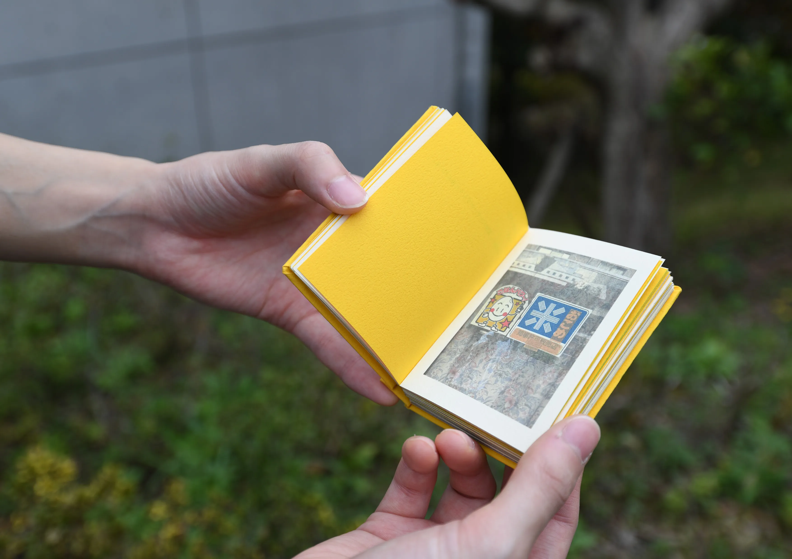

2024
路上観察2024
手書きの張り紙、謎のオブジェ、色褪せた看板、何故ソコに??な落とし物。
路上は、へんてこで面白いものに溢れています。
この作品では、カメラを持ってありのままの路上を観察し、発見したものを撮影、収集しました。
そして、それらを観察して考えたこと、どうしてこうなったのかを妄想して、文章やイラストに起こし、100年後の人に向けてアーカイブしました。
100×75×20(mm)
紙

